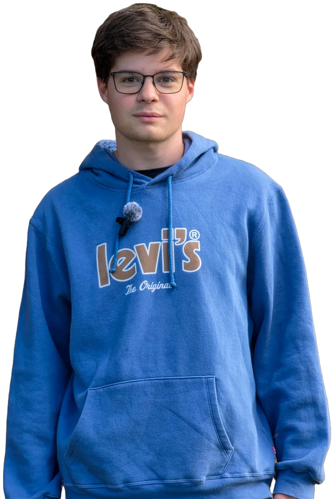
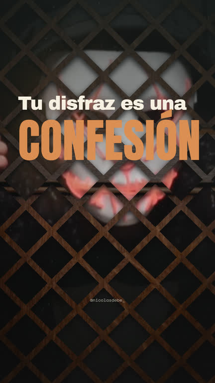
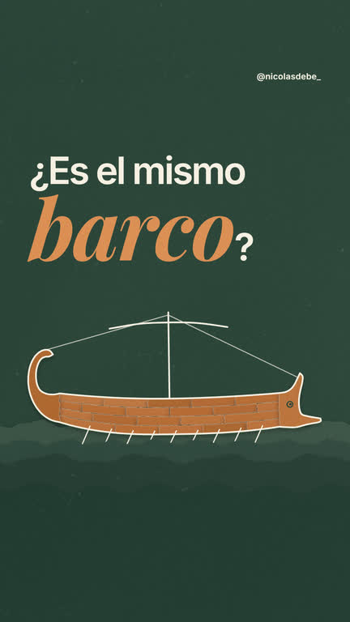
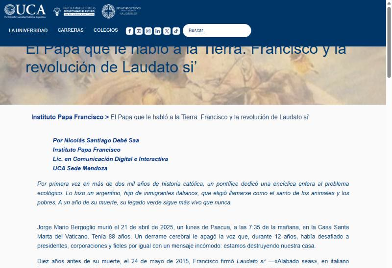
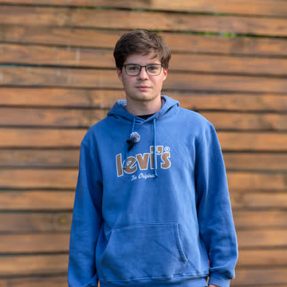

Voluntario con el Papa
La pieza que abre la serie: anuncio que viajo, cuento qué voy a hacer y pido intenciones para llevar a Luján. El gancho es una foto real de León XIV que se rasga y lo revela caminando.
Ver en Instagram ↗Nicolás Debé — Periodista en formación — Mendoza, Argentina
Periodismo visual: investigo, escribo, pongo la voz y animo cada pieza. También hago prensa para instituciones y marcas de Mendoza. Tengo 21 años y estoy disponible part-time.

Nicolás Debé — Periodista en formación
Investigo, escribo, pongo la voz y animo cada pieza. Mendoza, 21 años, disponible part-time.
Ver mi trabajo Servicios de redes sociales →Cobertura en el lugar y crítica cultural desde la fe para gente de veinte a treinta y cinco años: contemporánea y editorial, nunca confesional.

Entré como voluntario acreditado y conté la visita desde adentro, día por día. En la vigilia entrevisté a peregrinos de Chiclayo y del Valle Calchaquí, con su nombre y su lugar de origen en pantalla.
Ver el caso completo ↓
«Tu disfraz es una confesión.» El gancho arranca en un confesionario y una careta se rasga: cincuenta y dos segundos.
Ver en Instagram ↗
«Lo que nadie menciona de las consecuencias.» Colaboración con Abel de Jesús, publicada en su cuenta, con efectos de sonido grabados para la pieza.
Ver en Instagram ↗
«Todos creen que nació en el Vaticano.» Empieza con un cura de treinta y ocho años y un kayak. La pieza se juega al ritmo: corte seco a silencio en el segundo cuarenta.
Ver en Instagram ↗
La visita contada desde adentro, día por día.
Ver el caso completo ↓«Tu disfraz es una confesión.»
Ver en Instagram ↗
Con @abeldejesusyt, publicada en su cuenta.
Ver en Instagram ↗
«Todos creen que nació en el Vaticano.»
Ver en Instagram ↗
«Hace rato que no leés noticias. Leés el eco de una noticia.»
Ver en Instagram ↗
«¿Es el mismo barco?»
Ver en Instagram ↗Deslizá para ver más piezas
Antes que el video está el texto: nota de análisis, gacetilla de prensa y cobertura de eventos para clientes de Mendoza.

Análisis de la encíclica con foco en ecología integral, paradigma tecnocrático y enseñanza social, publicado con mi firma en el portal de la Universidad Católica Argentina.
Leer la nota ↗Redacción para Bolsa de Comercio de Mendoza, Colegio Notarial, QuienVino, Capilla Carlo Acutis y Grupo Presidente, con su repercusión en medios.
Ver el portfolio ↗ Trabajo · GB ConsultingCobertura de prensa en eventos, seguimiento de repercusión y distribución a una base segmentada de más de 170 periodistas.
Ver el sitio ↗Noviembre de 2026, visita apostólica de León XIV a la Argentina. Entré como voluntario acreditado y la conté desde adentro: una serie diaria, publicada mientras pasaba.
Lo vi de lejos, atrás de una reja, tapado por una rama. Nueve horas después estaba del otro lado del vallado: mi primer servicio como voluntario, al lado del altar. Día 3 de la serie, 9 de noviembre


Mové el mouse sobre el teléfono para recorrer la pieza
La pieza que abre la serie: anuncio que viajo, cuento qué voy a hacer y pido intenciones para llevar a Luján. El gancho es una foto real de León XIV que se rasga y lo revela caminando.
Ver en Instagram ↗El viaje a Buenos Aires y la acreditación contados objeto por objeto: la gorra, la botella, la SUBE de voluntario, el rosario rezado por la comunidad, la remera amarilla y el carnet.
Ver en Instagram ↗Lo vi llegar a Plaza San Martín desde atrás de una reja. Nueve horas después estaba del otro lado del vallado, en el punto de encuentro al lado del altar. A medianoche abrieron los accesos: familias con chicos, gente que viajó de otra provincia, muchos que durmieron en el asfalto.
Ver en Instagram ↗Pasé la noche anterior a la misa preguntándole a la gente por qué estaba ahí. Peregrinas de Chiclayo, donde él fue obispo. Una voluntaria de 64 años que vino sin tener todavía el alta de un cáncer: «por eso vengo». Angelita, del Valle Calchaquí: «estuvo por nuestra casa».
Ver en Instagram ↗El cierre de la serie: qué quiso decir León XIV cuando retomó en Buenos Aires el «todos, todos, todos» de Francisco. Tres añadidos, hacia Cristo, con Cristo y como Cristo, contados con archivo de la vigilia y escenas de papel animadas: la estatua de oro, el horno de Daniel 3, el lavatorio de los pies.
Ver en Instagram ↗Anuncio el viaje y pido intenciones para llevar a Luján.
Ver en Instagram ↗
02 / 05
El viaje y la acreditación, objeto por objeto.
Ver en Instagram ↗Del otro lado del vallado, al lado del altar, toda la noche.
Ver en Instagram ↗
04 / 05
Una noche entera preguntando por qué estaban ahí.
Ver en Instagram ↗
05 / 05
Los tres añadidos de León XIV a la frase de Francisco.
Ver en Instagram ↗Deslizá para ver la serie
@nicolasdebe_ es mi proyecto editorial: crítica cultural en reels, con una línea definida y publicación regular desde 2026.
En vivo desde Instagram

nicolasdebe_12 publicaciones 2.582 seguidores 168 seguidosNico · Periodismo Cultural Lic. en Comunicación Digital e Interactiva · UCA
Escribo sobre la cultura, vista desde la fe
Me gusta preguntar
Cada pieza se publica con su copy pensado para búsqueda, su texto alternativo de accesibilidad y su portada hecha aparte. La serie de la visita papal salió día por día, mientras duraba el voluntariado. Lo de la izquierda es el perfil tal como está ahora.
Voluntario acreditado durante la visita apostólica. Serie diaria publicada en caliente: entrevistas a peregrinos en la vigilia, crónica de la previa de la misa, registro del servicio y un cierre que explica el mensaje de León XIV a los jóvenes, con guion, voz en off, cámara y animación propios.
Crítica cultural desde la fe católica para jóvenes de veinte a treinta y cinco años. Cada pieza de punta a punta: investigación y verificación, guion con ganchos y tensión sostenida, voz en off propia y animación programada sobre un motor y un design system escritos por mí.
Artículo de análisis sobre Laudato si' publicado en el portal oficial de la universidad: ecología integral, paradigma tecnocrático y enseñanza social.
Gacetillas, contenidos institucionales y cobertura de prensa en eventos para Bolsa de Comercio de Mendoza, Colegio Notarial de Mendoza, QuienVino, Capilla Carlo Acutis y Grupo Presidente. Seguimiento de repercusión en medios y coordinación de la distribución: base segmentada de más de 170 periodistas y canal de WhatsApp Business.
Reels, fotografía y dirección de arte para un proyecto cultural mendocino sobre identidad.
Identidad visual y video corto, con la narrativa y el ritmo ajustados al objetivo de cada pieza.
Documental sobre la situación de calle en Mendoza: cámara, montaje y construcción del relato.
Conducción de espacios de formación juvenil y voluntariado, coordinación de equipos y gestión de proyectos.
Formación
Habilidades